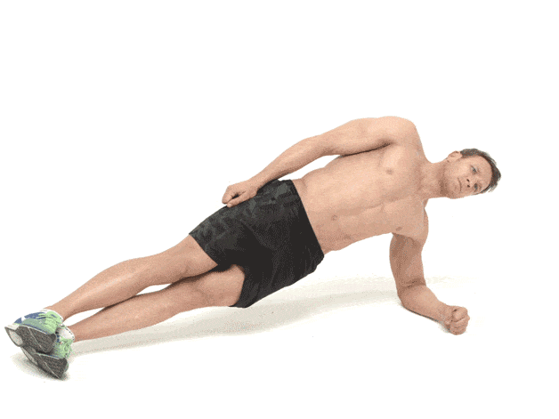
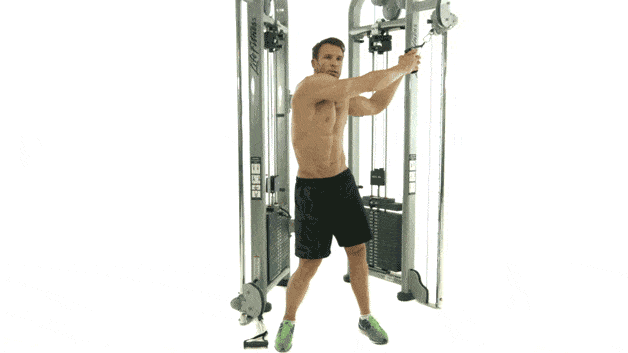
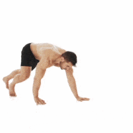
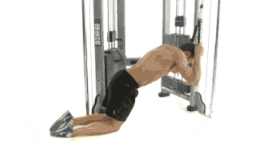

Perut six pack adalah idaman banyak orang, khususnya laki-laki. Untuk mendapatkannya tentu butuh usaha dengan rutin olahraga. Namun, agar perut bisa berbentuk layaknya roti sobek, apakah kita harus ke gym?
Jawabannya bisa iya dan tidak. Iya karena gym menawarkan fasilitas yang lengkap hingga kehadiran personal trainer. Setelah mendaftar, yang kamu perlukan hanya tekad dan komitmen untuk rajin mengikuti program latihan demi mencapai target.
Meski demikian, tanpa jadi anggota di gym pun kamu bisa, kok, berlatih sendiri di rumah untuk membentuk perut. Sebetulnya membentuk otot inti (core) tidak selalu membutuhkan fasilitas lengkap seperti di gym. Berbekal lantai di rumah dan gerakan yang tepat, dan tentunya tekad dan komitmen, perutmu dijamin bisa six pack!
5 Latihan Perut Agar Sixpack
Apakah kamu siap untuk membentuk perut six pack di rumah? Kuatkan tekad, inilah tujuh latihan rutin yang bisa kamu lakukan di rumah.
1. Plank

Set: 4
Repetisi: 1min
Rest: 30s
2. Side plank
Set: 4
Repetisi: 1min
Rest: 20s
3. Reverse crunch
Set: 4
Repetisi: 20
Rest: 30s
4. Bear Crawls
Set: 4
Repetisi: 30
Rest: 50s
5. Cable Crunch
Set: 4
Repetisi: 30
Rest: 60s